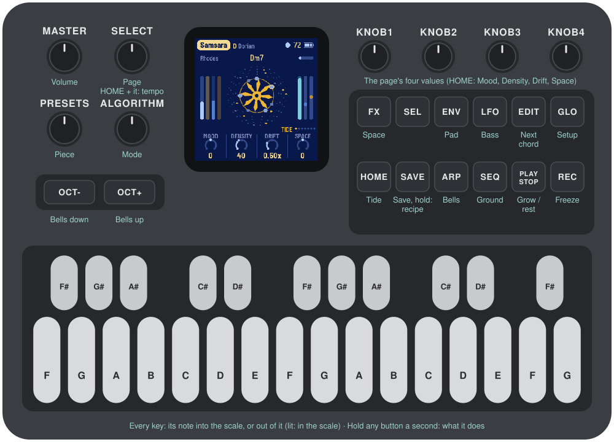
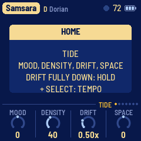
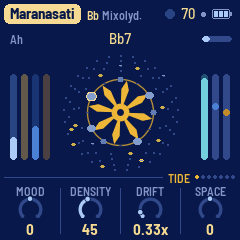
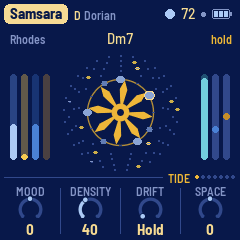
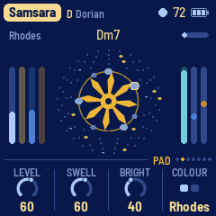
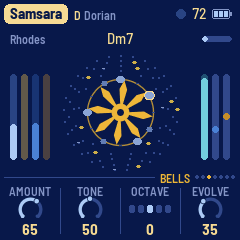
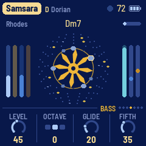
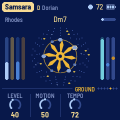
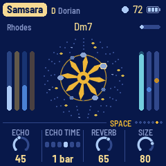

Manual
SAMSARA turns your M-VAVE FM-1 into a slow ambient piece that plays itself and changes over hours, in the spirit of Brian Eno's Reflection. Switch it on and it begins: a breathing pad, soft bells, a gliding bass and, now and then, a low ground under them, through a tape echo and a wandering plate reverb. Tone, harmony and density drift like weather. Every so often the whole piece ebbs, nearly to silence, and comes back. It never repeats and it never stands still, unless you ask it to.
SAMSARA is a fork of AMB-1 by Charles Vestal: its sounds and its platform, under a new conductor. See Credits.

1Install
SAMSARA has no web installer of its own yet; it installs from the command line, over USB.
- Download
samsara-X.Y.fwscfrom the releases page. - Get the source (
git clone https://github.com/tomorrowsman/fm1-samsara) and Python 3 withpip3 install mido python-rtmidi. - Connect the FM-1 with a USB data cable, switch it on, and run:
`` python3 base/tools/fm1_install.py samsara-X.Y.fwsc ``
It says what is on the FM-1 now and what it is about to write, and asks before it writes. Don't unplug the FM-1 while it's writing. When it's done, the FM-1 restarts into SAMSARA.
To go back to M-VAVE's firmware, use "Back to the stock firmware" at the bottom of AMB-1's web installer (Chrome or Edge): download the FM-1 V15 file from the link there, choose it and press the button. M-VAVE's own updater, M-UPGRADE, works too, and so does the command above with M-VAVE's file.
Installing other firmware is at your own risk. If the FM-1 ever won't start, see Recovering an FM-1 that won't start.
SAMSARA keeps its pieces in its own place in the FM-1's memory. Installing it does not touch what AMB-1 (or DUB-1, NACHTFAHRT or AISLING, which share AMB-1's place) saved, and they do not touch SAMSARA's.
2Getting started
SAMSARA starts playing as soon as you switch it on. Try this:
- Listen. The first piece, Samsara, begins in D Dorian. Turn MASTER to set the volume. Give it time: it is made for hours, and the first minutes are only where it starts.
- Try another piece. Turn PRESETS. Each of the four pieces has its own key, tempo, sounds and pace.
- Turn the four knobs. On the first page (HOME) they are Mood (darker or brighter), Density (how much is going on, and how loud), Drift (how fast everything changes) and Space (near and dry, or far and wet). All four sit at a middle that is the piece as written.
- Hold a moment you like. Turn Drift all the way down. The screen says "hold", and the piece stays in the state it is in: the same chord, the same voices, the same tone, for as long as you leave it there. Turn Drift up and it moves on from where it was.
- Change the scale. Press a key whose note is lit to take that note out, so nothing plays it. Press it again to bring it back. Press a key that isn't lit to add its note.
- Move on. Press EDIT, and the pad moves to the next chord at the start of the next bar.
- Freeze. Press REC to hold the chord and let the reverb ring on, while the bells go on above it. Press REC again to let it go.
- Rest. Press PLAY, and the piece stops growing while its sounds fade out. Press PLAY again and it grows back.
Each piece keeps what you change. SAMSARA saves by itself while it rests, or you can press SAVE.
To find out what a button does, hold it for a second to see a card. Let go and nothing happens.
3Controls
The drawing at the top shows every control. Here they are in more detail.
| Control | What it does |
|---|---|
| Keys | The keys are the scale, and they light up for the notes in it. Press a key to add its note or take it out. Every octave of a note is the same key. The root always stays, and the scale keeps at least three notes. |
| PLAY | Grows or rests the piece. SAMSARA starts growing by itself when you switch it on. When it rests, the sounds fade out and the reverb rings away. PLAY is lit while it grows. |
| REC | Freezes the chord. The reverb rings on, while the bells go on dry above it. Press REC again to thaw. It's lit while frozen. |
| EDIT | Moves to the next chord at the start of the next bar, or right away while resting. |
| HOME | Opens the Tide page: Mood, Density, Drift, Space. |
| ENV · ARP · LFO · SEQ | Open the layers' pages: Pad, Bells, Bass and Ground. |
| FX · GLO | Open the Space and Setup pages. The lit button shows which page you're on. |
| SELECT | Turns to the previous or next page. To change the tempo from any page, hold HOME and turn SELECT. |
| ALGORITHM | Picks the home mode: Ionian, Dorian, Phrygian, Lydian, Mixolydian, Aeolian, or pentatonic major or minor. It loads the mode's scale. Once you change the scale with the keys, it's Custom. |
| PRESETS | Picks the piece. For the list, see The pieces. |
| KNOB 1–4 | Set the four values on the screen. A few clicks always move one step at a time, and a quick turn speeds up, so half a turn sweeps the whole range. |
| OCT− / OCT+ | Move the bells down or up an octave, up to two either way, from any page. Both held for 5 seconds: update mode. |
| MASTER | Sets the volume. |
| SAVE | Saves all four pieces. Hold it for 1.5 s to put the piece back to its recipe. |
To find out what a button does, hold it for a second (any button but PLAY), and a card explains it. A key, a knob or another button puts the card away, and letting go does nothing else.

4The screen


- The top line shows the piece and the key and mode as they are now. The harmony leaves home over the hours, a note at a time, so this changes as the piece plays. On the right are a slow beat light (a play triangle while resting), the tempo (EXT when it follows MIDI clock), a dot when there are unsaved changes, and the battery. Messages such as "ADDED F#" and "NEXT CHORD" show here for a moment.
- The battery shows three bars when it's full, and fewer as it runs down. At one bar or none it turns red, and it's time to charge. When it's plugged into a computer, it shows a lightning bolt instead.
- Under it, on the left, is the name of the pad's tone as it is now (it wanders between six), in the middle the chord's name, and on the right a thin bar that fills on the way to the next chord. Frozen, it says "held"; with Drift fully down, "hold".
- The wheel in the middle is the Wheel of Samsara: eight gold spokes and a hub. Its rim is the ring of the twelve notes, C at the top: notes in the scale are lit, the chord's notes larger, and the root has a ring around it. The wheel turns one spoke for each chord, so it stands still while the piece is held. Its gold dims as the tide goes out.
- Around the wheel are the four bell loops, 13, 17, 23 and 29 steps long, from the inside out. Each dot is a step, and the gold ones hold a note. A playhead goes round each loop and glows when it rings a bell.
- On the left are the four layers' levels as they sound: pad, bells, bass and ground.
- On the right are three slim columns. The first is the tide: full when the piece is in, and sinking as it ebbs. The other two each carry one mark: where the weather's brightness is, and where its density is. The marks move over minutes; the middle is the knob's own place.
- At the bottom are the page's name and seven dots, one for each page, then its four values, one for each knob. The one you're turning lights up.

5How it moves
SAMSARA grows four layers from one scale and one chord.
- The pad is up to three voices at a time: a choir, a filtered Rhodes or sung voices. Each voice enters slowly, swells and sinks on its own slow walk, stays for a while and dissolves. Sometimes three sing, sometimes one, and sometimes the pad rests altogether for minutes.
- The bells are FM bells, softly struck, on four loops of unequal length (13, 17, 23 and 29 steps), so the melody never quite repeats. They come in passages and let up between them. When they are nearly alone they turn rounder, closer to a plucked string, and high notes are softer than low ones.
- The bass plays the chord's root, low and gliding, and sometimes leans on the fifth. It comes and goes like the pad.
- The ground is rare: the chord's root an octave under the bass, entering over a minute or two, staying a few minutes and leaving, with long gaps between visits.
Over them, things move on four timescales:
- Seconds to minutes: each voice's own breathing. No level changes faster than a slow swell; nothing arrives suddenly except a bell's strike.
- Minutes: the weather. Brightness, density, register and space each wander, and the layers come and go. One sustained layer always sounds: the piece may grow very quiet, but something is always there.
- Tens of minutes: the tide. Every quarter to half an hour or so the whole piece ebbs, far down, for a few minutes, and returns. The return is quicker than the leaving.
- Hours: the seasons. The pad's tone travels between six characters, and the harmony leaves its home key one note at a time, by way of chords the old and new scales share, and wanders back.
Then comes the space: a tape echo with two heads, and a plate reverb whose decay slowly wanders, so a held note breathes in it instead of standing.
A governor listens to the whole and keeps it near the loudness the Density knob asks for: it turns a loud mix down, and lets a quiet one be quiet.
6The pieces
Turn PRESETS to choose one of four pieces. Each is a recipe for the whole: the layers, the sounds, the tempo, key and mode, and its pace. Each one remembers how you left it. To put the piece you're on back to its recipe, hold SAVE for 1.5 s. Tune, MIDI out and Lights are shared by all the pieces.
| Piece | What it is |
|---|---|
| Samsara | D Dorian, 72. All four layers, the choir pad, at half speed. The piece everything else was built around. |
| Maranasati | Bb Mixolydian, 70. Sung voices and a bass sharing the weight, sparse bells, the slowest weather of the four. |
| Anatta | G Lydian, 84. A brighter Rhodes, busier bells, a light ground. |
| Nirvana | E pentatonic major, 64. The choir pad, dark round bells in long echoes and the largest room; no ground. |
Each began from one of AMB-1's recipes: Garden, Tides, Afternoon and Shoreline.
7The pages
Seven pages, each with its own button and up to four values on KNOB 1–4. Turn SELECT to step through them in this order.
HOME: Tide
- Mood goes from −50 (dark) to +50 (bright); 0 is the piece as written. It leans the pad's tone, the bells' tone, and which way the harmony tends to wander: toward darker modes or brighter ones.
- Density sets how much is going on and how loud the whole is meant to be: how many pad voices, how many bell notes.
- Drift sets how fast everything changes, shown as a speed: 1.00x at the middle, 0.25x near the bottom, 4.00x at the top. Fully down is Hold: nothing moves on until you turn it up.
- Space goes from −50 (near and dry: less echo and reverb, a shorter decay) to +50 (far and wet); 0 is the piece as written. It works around the Space page's own values without changing them.
ENV: Pad

- Level sets the pad's volume.
- Swell sets how far the voices breathe.
- Bright opens the pad's filter. With Voices, it also moves the vowel.
- Colour picks Rhodes, Voices or Choir. Each piece keeps its own. The Choir sings an octave lower than the other two.
ARP: Bells

- Amount sets how many bells there are and how loud, together. At 0 there are none.
- Tone goes from round and softly struck to a long metallic clang.
- Octave moves the bells up to two octaves down or up. OCT− and OCT+ do the same.
- Evolve sets how often a loop's notes change as it comes round. At 0, the loops keep their notes.
LFO: Bass

- Level sets the bass's volume.
- Octave puts the bass one octave down, at home, or one octave up.
- Glide sets how slowly the bass slides to its next note, from a quick step to over a second.
- Fifth sets how often the bass leans on the fifth, halfway through a chord.
SEQ: Ground

- Level sets the ground's volume. At 0 it never comes.
- Motion sets how far the small things wander: the pad voices' places in the stereo field and their tone, and the echo's heads.
- Tempo goes from 30 to 120. You can also hold HOME and turn SELECT from any page. The tempo is the bells' and the echo's clock; the weather has its own (Drift).
FX: Space

- Echo sets how much goes to the echoes.
- Echo time sets the tape loop's length: a dotted quarter, a half, a dotted half, or 1, 2 or 4 bars. At slow tempos, it's shortened to fit the loop's 5.6 seconds.
- Reverb sets how much goes to the plate.
- Size sets how long the plate rings, and how many times the echo comes back.
GLO: Setup
- Root sets the home key's root note, and the scale moves with it.
- Tune fine-tunes SAMSARA by up to 50 cents either way.
- MIDI out turns MIDI out on or off.
- Lights has three settings. With On, the keys light the scale, and the unlit buttons glow dimly so you can find them on the black FM-1. With Keys, only the keys light. Off turns the lights off.
The top right of this page shows how much of the FM-1's time the sound takes: CPU as it is now and PK, the highest it has been since switching on. If the load ever comes near the limit, SAMSARA thins itself before the sound can break up (fewer bells at once, then fewer pad voices), and the page says THIN while it does.
8MIDI
MIDI comes in over USB and the TRS jack, and goes out over USB.
- A note on channel 1 adds its note to the scale or takes it out, like a key.
- When MIDI clock comes in, SAMSARA follows its beat, and start and stop start and stop the piece. The screen shows EXT for the tempo.
- MIDI out is on by default. The pad plays on channel 1, the bells on 2, the bass on 3 and the ground on 4. When SAMSARA runs on its own tempo, it also sends clock, start and stop. Turning MIDI out off sends all notes off.
Screen reader
SAMSARA can tell a screen reader what its screen shows. Connect the FM-1 by USB, open FM-1 Screen Reader in Chrome or Edge, and click Connect. It reads out the page you're on and its knobs, a knob's value as you turn it, the piece and its key as it is now, the notes you add or take out, help cards, every message, the chord each time the piece moves on, "holding" at Hold, and "The tide is out" during an ebb.
9Saving
SAMSARA keeps all four pieces in the FM-1's memory, each as you left it: the knobs, the scale, the tempo, the pad's sound and the bells' octave, plus Tune, MIDI out and Lights.
- SAMSARA saves by itself a few seconds after a change, but only while it rests. Writing to the memory interrupts the sound for a moment, so it never saves while the piece grows. A dot at the top of the screen means there are unsaved changes.
- Press SAVE to save now, whether it's playing or not.
- Hold SAVE for 1.5 s to put the piece back to its recipe. That isn't saved until the next save, so if you switch off before then, your version comes back.
Where the piece has wandered to (the weather, the harmony's place away from home) is not saved: each time you switch on, it starts from home and goes somewhere else.
10Troubleshooting
To put the FM-1 in update mode from a running SAMSARA, hold OCT− and OCT+ together for 5 seconds; the screen counts down. At power-on, hold REC while you switch it on. If you installed m-bootloader with the web installer, the installer can reach the FM-1 from there, and holding PLAY instead opens m-bootloader's recovery menu. Without m-bootloader, REC at power-on starts the chip's own update mode, which only the rescue below can reach.
If a button or knob does the wrong thing, calibrate the panel. Hold OCT− and OCT+ while you switch the FM-1 on, and the screen asks you to press each button and turn each knob in turn.
If SAMSARA crashes, it shows a red CRASH screen and restarts by itself a few seconds later. The next start shows RESTARTED AFTER A CRASH and an address (PC ...) for a moment. If you report the problem, include that address and what you were doing.
If SAMSARA crashes twice in a row while starting, it starts in SAFE MODE instead. There's no sound, but USB works, so the web installer can reach it. Reinstall SAMSARA, or put the stock firmware back from the same page. Press PLAY to try starting normally again. If even safe mode fails twice, the FM-1 drops into the chip's own update mode, and only the rescue below can reach it.
Recovering an FM-1 that won't start
An FM-1 in the chip's own update mode shows a blank screen, and neither the web installer nor M-VAVE's updater can see it. A script from felucca-bsp can put M-VAVE's firmware back, on a Mac or a Linux machine (there is no Windows version), with the USB cable you already have.
Open Terminal, paste this line and press Return:
bash -c "$(curl -fsSL https://raw.githubusercontent.com/hugelton/felucca-bsp/main/tools/fm1_rescue.sh)"- If a window asks to install the command line developer tools, click Install. When it has finished, paste the line again.
- If it asks for a password, type your password (nothing shows as you type) and press Return.
- When it says it's waiting, plug the FM-1 in and switch it on. The script catches it, checks the chip, saves a backup of the FM-1's memory in the
fm1-rescuefolder in your home folder, and asks before it writes anything. - Type yes and press Return. Don't unplug anything until it says it's restarting the FM-1. The FM-1 then starts into its original firmware, and you can install SAMSARA again from there.
The script downloads M-VAVE's FM-1 V15 firmware and JieLi's flash loader, and checks both against known fingerprints. It writes only the firmware area of the memory, never the bootloader or the FM-1's own settings, and checks everything it writes. If the FM-1 never shows up at all, Felucca's FM-1-transporter (a small RP2040 board wired to the USB lines) can still reach it.
11Parameters
The defaults are Samsara's; each piece has its own.
| Page | Value | Range | Samsara |
|---|---|---|---|
| Tide | Mood | −50 – +50 | 0 |
| Tide | Density | 0–100 | 40 |
| Tide | Drift | Hold, 0.25x – 4.00x | 25 (0.50x) |
| Tide | Space | −50 – +50 | 0 |
| Pad | Level | 0–100 | 60 |
| Pad | Swell | 0–100 | 60 |
| Pad | Bright | 0–100 | 40 |
| Pad | Colour | Rhodes, Voices, Choir | Choir |
| Bells | Amount | 0–100 | 65 |
| Bells | Tone | 0–100 | 50 |
| Bells | Octave | −2 – +2 | 0 |
| Bells | Evolve | 0–100 | 35 |
| Bass | Level | 0–100 | 45 |
| Bass | Octave | −1 – +1 | 0 |
| Bass | Glide | 0–100 (20 ms – 1.2 s) | 20 |
| Bass | Fifth | 0–100 | 35 |
| Ground | Level | 0–100 | 40 |
| Ground | Motion | 0–100 | 50 |
| Ground | Tempo | 30–120 | 72 |
| Space | Echo | 0–100 | 45 |
| Space | Echo time | 1/4., 1/2, 1/2., 1 bar, 2 bars, 4 bars | 1 bar |
| Space | Reverb | 0–100 | 65 |
| Space | Size | 0–100 | 80 |
| Setup | Root | C – B | D |
| Setup | Tune | −50 – +50 cents | 0 |
| Setup | MIDI out | Off, On | On |
| Setup | Lights | Off, On, Keys | On |
| ALGORITHM | Mode | 8 modes, or Custom | Dorian |
12Credits
SAMSARA is by Tomorrow's Man. It is a fork of AMB-1 by Charles Vestal (<https://github.com/charlesvestal/fm1-amb>, from version 1.3.2): the pad, the bells, the bass, the echo and the plate, the pages and the whole platform under them are AMB-1's. What SAMSARA adds is the conductor (the weather, the tide, the seasons, the wandering harmony and tone, the governor), the ground layer, the Tide page's four knobs and the wheel. Its own place in the FM-1's memory is its own too.
SAMSARA is free software under the Mozilla Public License 2.0, as AMB-1 is. If you share a changed version, share the source of the files you changed too.
- The idea comes from Brian Eno's generative music: Music for Airports' tape loops of unequal length, the echo and tape-delay chain of Discreet Music, and the endlessness of Reflection.
- The reverb is Jon Dattorro's plate ("Effect Design, Part 1", JAES 1997), by way of FoMni-1 and AMB-1.
- The platform (hardware layer, USB, update loader, installer and storage) is fm1-base and felucca-bsp, from Felucca by Leo Kuroshita, Hügelton Instruments.
- The idea of running FM-1 firmware in the browser comes from Groove OS.
- The fonts are Barlow Semi Condensed and Terminus (SIL Open Font License).
M-VAVE and FM-1 are trademarks of their owners. SAMSARA is not affiliated with M-VAVE, Brian Eno, Charles Vestal or Hügelton Instruments.